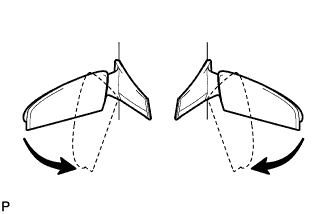
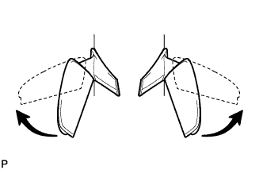
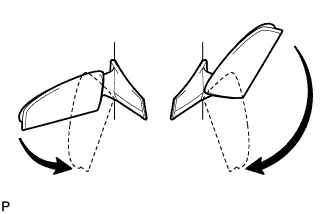
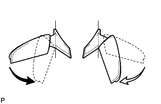
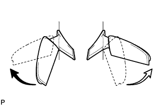

Power Mirror System Function Inspection |
| 1. Power Retractable Door Mirror Operation Inspection |
Turn ACC ON.
 |
Check that when the outer rear view mirror assemblies LH and RH are in the driving position and the retract switch is set to the retract position, the outer rear view mirror assemblies LH and RH move to the retracted position.
 |
Check that when the outer rear view mirror assemblies LH and RH are in the retracted position and the retract switch is set to the driving position, the outer rear view mirror assemblies LH and RH move to the driving position.
 |
Check that when the outer rear view mirror assemblies LH and RH are in the driving position, one outer rear view mirror assembly is folded forward by hand and the retract switch is set to the retract position, the outer rear view mirror assemblies LH and RH move to the retracted position.
 |
Check that when the outer rear view mirror assemblies LH and RH are in the driving position, one outer rear view mirror assembly is folded to the retracted position by hand and the retract switch is set to the retract position, the opposite outer rear view mirror assembly moves to the retracted position.
 |
Check that when the outer rear view mirror assemblies LH and RH are in the retracted position, one outer rear view mirror assembly is raised to the driving position by hand and the retract switch is set to the driving position, the opposite outer rear view mirror assembly moves to the driving position.
Check that when the IG is turned OFF while the outer rear view mirror assembly is operating, the outer rear view mirror assembly stops, and when ACC is turned ON, the outer rear view mirror assembly resumes operation.
Check that when the outer rear view mirror assembly is held by hand while operating, the outer rear view mirror assembly stops, and when the retract switch is changed, it moves in the opposite direction.
| 2. Mirror Heater Operation Inspection (w/ Cold Area Specification) |
Turn IG ON.
Check that the indicator comes on and the mirror surface warms up when the mirror heater switch (rear defogger switch) is pressed.
Check that the indicator goes off and mirror heater operation stops after approximately 15 minutes.